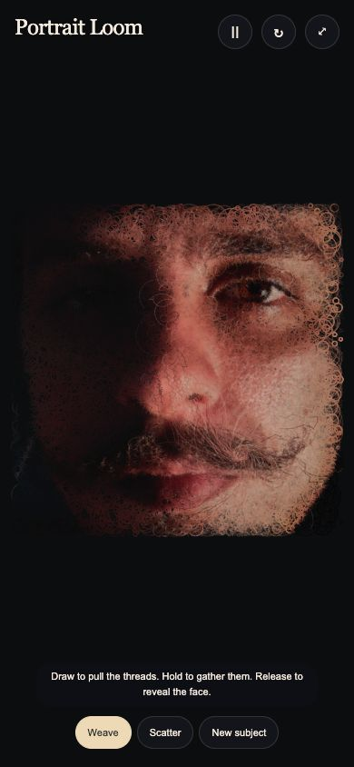
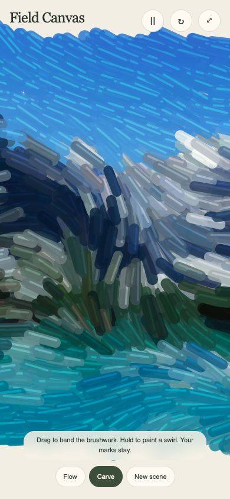
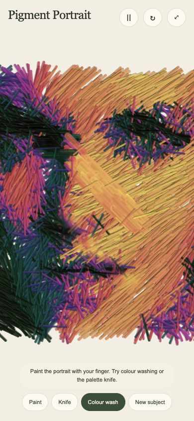
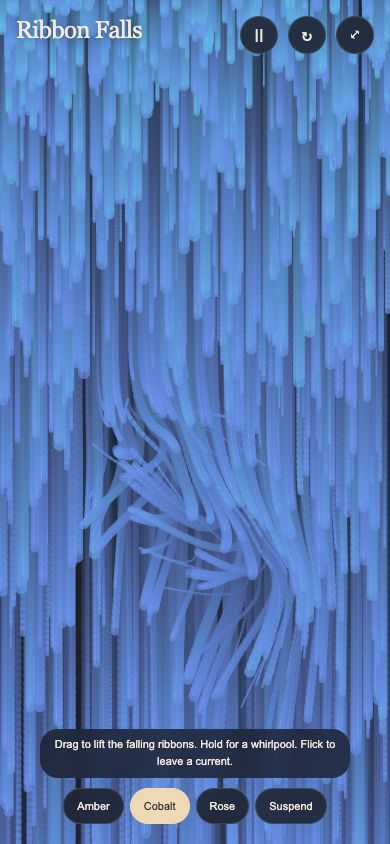
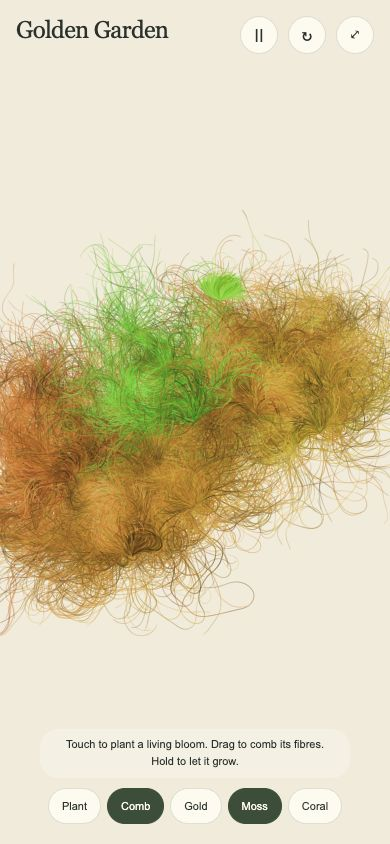
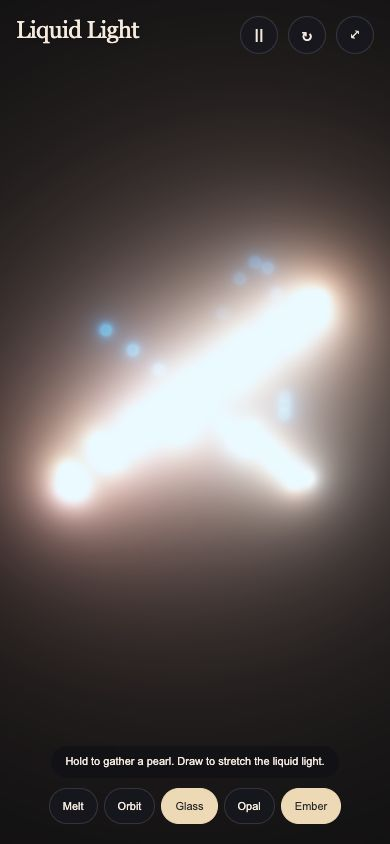

01 / ART STUDYPortrait Loom
Draw to pull the threads. Hold to gather them. Release to reveal the face.
Play ↗HTML ↓ZIP ↓Independent touch artworks · English · Offline HTML · One ZIP per artwork

01 / ART STUDYDraw to pull the threads. Hold to gather them. Release to reveal the face.
Play ↗HTML ↓ZIP ↓
02 / ART STUDYDrag to bend the brushwork. Hold to paint a swirl. Your marks stay.
Play ↗HTML ↓ZIP ↓
03 / ART STUDYPaint the portrait with your finger. Try colour washing or the palette knife.
Play ↗HTML ↓ZIP ↓
04 / ART STUDYDrag to lift the falling ribbons. Hold for a whirlpool. Flick to leave a current.
Play ↗HTML ↓ZIP ↓
05 / ART STUDYTouch to plant a living bloom. Drag to comb its fibres. Hold to let it grow.
Play ↗HTML ↓ZIP ↓
06 / ART STUDYDraw liquid light. Hold to grow a pearl. Two fingers bend the current.
Play ↗HTML ↓ZIP ↓